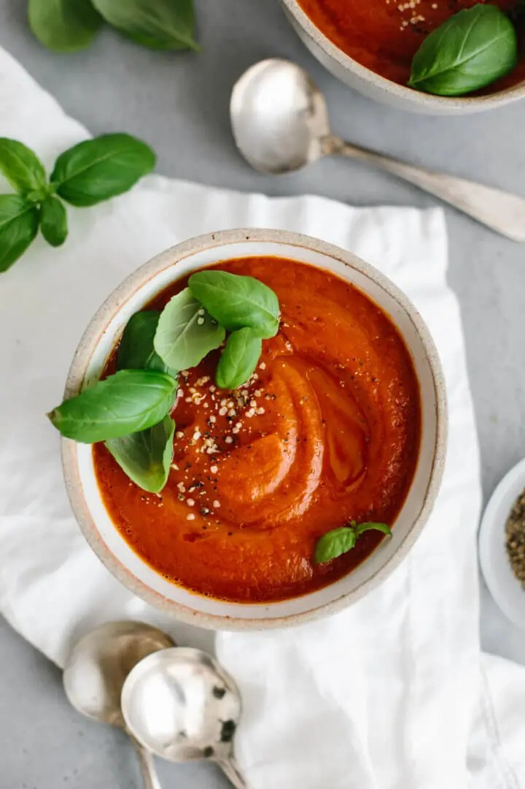

Roasted Red Pepper and Tomato Soup

Description
This roasted red pepper soup is healthy and easy to make. Just roast all the veggies and blend them together in your blender!
Ingredients
- 4 red bell peppers
- 3 large tomatoes
- 1 small onion
- 5 garlic cloves
- 6 ounces tomato paste
- 1 tbsp balsamic vinegar
- 1 tsp dried basil
- 1 1/2 cups water or stock
- 3 tbsp olive oil
- salt and pepper
Instructions
- Turn the top broiler on in your oven.
- Slice the red bell peppers, tomatoes and onion in half. Remove the seeds and stems from the bell peppers, the stems from the tomatoes and the outer peel from the onion. Then, place these all on a baking tray and drizzle the veggies with olive oil and season with salt and pepper. Use your fingers to rub the oil and seasoning on both sides of the veggies.
- Roast the veggies for 25-30 minutes, or until the top side is charred black.
- Use tongs to transfer the bell pepper to a glass bowl and cover with plastic wrap for about 20 minutes, to steam the bell pepper.
- When the other veggies are cool enough to handle, remove their skins and transfer to your blender. You should be able to easily squeeze out the garlic cloves from their skin as well.
- Add the tomato paste, balsamic vinegar, dried basil and water (or stock) to your blender. Blend everything on high until smooth.
- At this stage, the soup will be warm. If you'd like it hotter, blend for 4-5 minutes. The friction of the blender blades will heat it up.
- Before serving, top with optional garnish.
Back Home